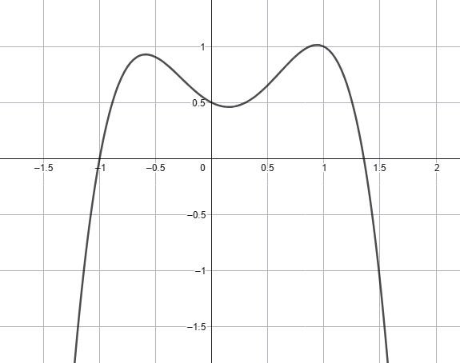

Di seguito riporto una lista che aggiorneremo volta per volta. Nuovi elementi della lista saranno
contraddistinti dal simbolo 🔥.
É necessario imparare queste informazioni a memoria.
\(\left(ln(x)\right)' = \dfrac{1}{x}\,\,\,\,\)🔥
\(\left(sin(x)\right)' = cos(x)\,\,\,\,\)🔥
\(\left(cos(x)\right)' = -sin(x)\,\,\,\,\)🔥
\(\left(e^x\right)' = e^x\,\,\,\,\)🔥
\(\left(c\right)' = 0\,\,\,\text{con} \,\, c \in \mathbb{R}\,\,\,\,\,\)
\(\left(x^{\alpha}\right)' = \alpha\,x^{\alpha - 1}\,\,\,\) con \(\alpha \in
\mathbb{R}\,\,\,\,\,\)
Regole di derivazione
Derivata del prodotto di una costante per una funzione
Consideriamo la funzione
\[
f(x) = 3x^4 - 2x^3 - 3x^2 + x - 1
\]
Calcolare la derivata di \(f\).
Quanto vale la derivata in \(x = 1\)
stabilire se il seguente quello rappresentato in figura può essere il grafico \(f\).

Soluzione
Si ha che
\[
f'(x) = 12x^3 - 6x^2 - 6x + 1
\]
quindi il valore della derivata in \(x = 1\) è \(f'(1) = 1\).
Di conseguenza il grafico in figura non può essere quello della funzione \(f\), perché la tangente in
corrispondenza di \(x = 1\) è decrescente.